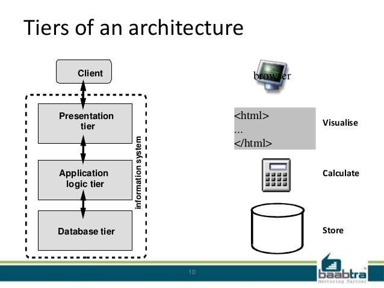
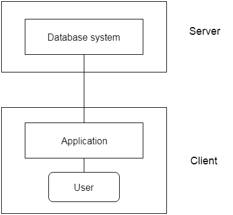
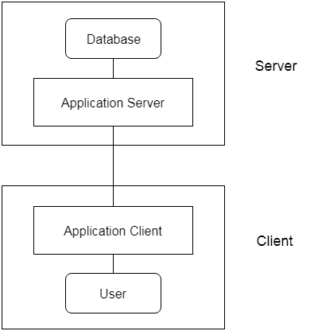

Database architecture can be seen as a single tier or multi-tier. But logically, database architecture is of two types like: 2-tier architecture and 3-tier architecture.
Types of DBMS Architecture
| Type |
Description |
Images |
| 1-Tier Architecture |
- In this architecture, the database is directly available to the user. It means the user can directly sit on the DBMS and uses it.
- Any changes done here will directly be done on the database itself. It doesn't provide a handy tool for end users.
- The 1-Tier architecture is used for development of the local application, where programmers can directly communicate with the database for the quick response.
|
 |
| 2-Tier Architecture |
- The 2-Tier architecture is same as basic client-server. In the two-tier architecture, applications on the client end can directly communicate with the database at the server side. For this interaction, API's like: ODBC, JDBC are used.
- The user interfaces and application programs are run on the client-side.
- The server side is responsible to provide the functionalities like: query processing and transaction management.
- To communicate with the DBMS, client-side application establishes a connection with the server side.
|
 |
| 3-Tier Architecture |
- The 3-Tier architecture contains another layer between the client and server. In this architecture, client can't directly communicate with the server.
- The application on the client-end interacts with an application server which further communicates with the database system.
- End user has no idea about the existence of the database beyond the application server. The database also has no idea about any other user beyond the application.
- The 3-Tier architecture is used in case of large web application.
|
 |